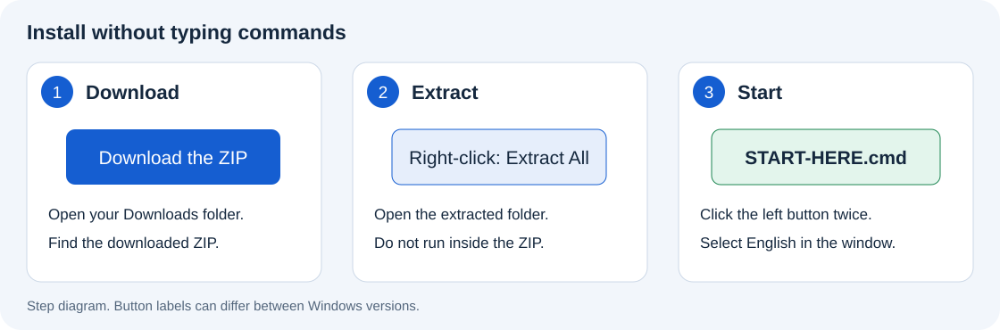
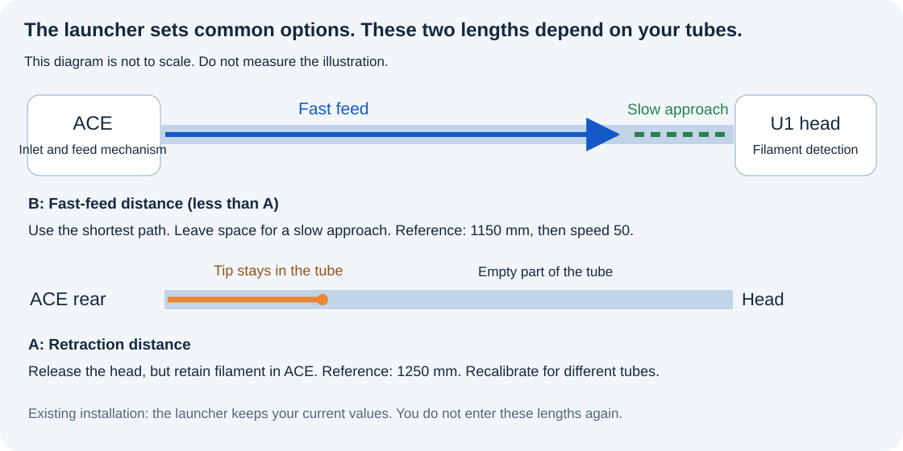
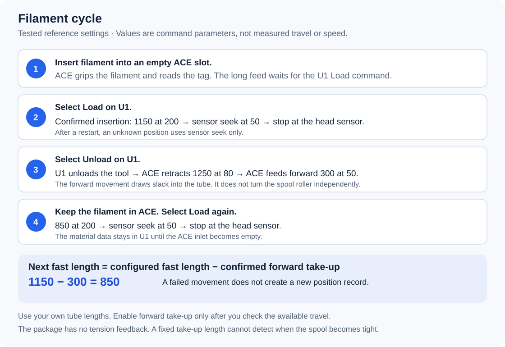

No programming knowledge is required.
Double-click START-HERE.cmd. Select 2. English. The wizard can start with U1 firmware preparation.
This is the offline guide. It does not start installation when opened.
Built with OpenAI Codex. Installation does not require Codex or an API key.
External detection is automatic. The installer saves backups, sets External, and verifies the internal-reader service state.
Quick start
简体中文 · Manual installation · Home
Use a Windows 10 or 11 computer and follow the wizard. You do not need programming knowledge.
1. Prepare the devices
- Finish the print and all filament operations. Turn off heating and ACE drying. Wait until the nozzles and the bed are below 50°C.
- First installation: unload normally on the U1, then pull the filament out of all four ACE inlets. For an update, you can keep the filament.
- Make sure that the feeder is an ACE Pro Gen 1, not an ACE 2 Pro.
- Turn both devices off. Connect the ACE-to-USB cable and the four PTFE tubes as in the SnapAce hardware guide. Then turn the power on. A normal charging cable is not a substitute.
- Connect the computer and the U1 to the same network. Both need internet access.
If the U1 has your own configuration changes, save a backup first. The project backup does not protect changes made before a firmware update.
Chinese readers who are new to the hardware and screen steps can read the preparation guide.
2. Download, extract, start
- Download the ZIP.
- In the Downloads folder, right-click the ZIP and select Extract All.
- Open the extracted
Ultimate-U1-ACE-linkfolder and double-click START-HERE.cmd. - Type 2 for English and press Enter.

Do not run the file from inside the ZIP preview. The .html files are offline instructions, not installers.
3. Select a menu
| Menu | When to select it |
|---|---|
| 1. U1 is ready | The U1 has 2.0.0-paxx12-24, Advanced Mode is on, and Root Access is Open. The wizard checks the ACE firmware and then installs. |
| 2. Prepare U1 firmware USB | The U1 does not have the specified firmware. You need a USB drive that is already FAT32 with 300 MB free. The wizard does not format it. |
| 3. Manual installation | You want to run each command yourself. This only opens the instructions and does not connect to the printer. |
| 4. ACE firmware | You only maintain the ACE, or you want the result of the last ACE update. This does not install the U1 integration. |
For menu 2, see U1 firmware preparation for each screen step. The printer address can change after the update.
If the U1 has a different or custom firmware, check compatibility separately. Do not overwrite it only to pass the check.
4. Enter the connection information
| Prompt | What to enter |
|---|---|
| Printer address | The IP on the U1 Wi-Fi page. Enter only the numeric address. |
| First SSH connection | Compare the address with the screen, then confirm. See first connection. |
password: | The SSH root password of the printer, not the Wi-Fi password. No characters appear while you type. This is normal. |
If you did not change them, the user is root and the initial password is snapmaker. See the upstream SSH notes.
The wizard does not store the password and can ask for it more than once.
5. ACE firmware
A first installation enters this stage automatically.
- Select the automatic check.
- Wait while the wizard downloads and verifies the firmware and checks the ACE model, current version, and idle state.
- Compare the source and target versions in the window, then confirm the update.
- Until the result appears, do not remove power and do not disconnect USB.
The only supported route is from V1.3.856 / boot V1.0.1 to OpenCubic CFW 1.1.1 (shown as CV1.3.863).
The wizard stops for other versions. Do not force it. See the ACE firmware wizard.
6. Review tube distances, then install
A first installation asks for two distances. An existing installation keeps its values.

| Letter | Meaning |
|---|---|
| A | The distance the ACE pulls back on unload. The filament tip must stay in the tube behind the ACE. |
| B | The fast feed distance on load. It must end before the print head and be less than A. |
- Measure your tube paths with settings and calibration and select A and B.
- Compare the settings in the window, then confirm installation.
The tested machine uses A = 1250 mm and B = 1150 mm. These are for comparison only.
The installer makes a backup of the files it changes and sets Filament Detection to External automatically.
7. After success, test each slot
Wait until the window reports that this project is installed. A message about the ACE firmware only is not sufficient.
- Put filament into one empty ACE inlet and release the spool. Wait for the grip and the NFC read to end.
- Make sure that it did not feed to the print head by itself and that the material data is correct. You can enter unrecognized material manually.
- Select Load on the U1 and wait for completion.
- Select Unload. Make sure that the filament stays in the ACE and the material data stays.
- Do not remove the filament. Select Load again.
- When this slot passes, test the other three slots one at a time.
Stop immediately if there is a jam, slipping, or an error. See daily use.
If a step stops
| Situation | What to do |
|---|---|
| The OpenSSH Client is missing | Add it with the steps below. You do not need Python. |
| Connection or upload fails before installation | Check the current IP, the network, Root Access, and the SSH password. |
| The machine is hot, busy, or drying | End the operation, turn off heating and drying, and wait until below 50°C. |
| No single ACE interface is found | Check the power and the cable. Connect only one ACE. Do not guess the serial port. |
| The U1 screen reports an update error | Stop and record the text. See U1 firmware preparation. |
| The ACE update has no result, or the computer disconnects | Keep power and USB connected. Open the wizard again from the same package version and select menu 4. Do not send the update again. |
| Installation possibly started but no success message | Keep the window. Do not install again. Follow update and rollback. |
Automatic rollback VERIFIED means that the files on the U1 were restored. It does not mean that the ACE firmware was restored.
For other problems, see troubleshooting.
Install the Windows OpenSSH Client if needed
- Select Start, then search for and open Optional features.
- Select View features or Add a feature.
- Search for OpenSSH. Select OpenSSH Client and install it. Do not select OpenSSH Server.
- Run START-HERE.cmd again.
See the Microsoft instructions.
About this project
The user set the requirements and did the physical tests. OpenAI Codex wrote the code, the installer, and the documentation. You do not need Codex to install or use the project.
See THIRD_PARTY.md for upstream sources and licenses.
U1 firmware and access setup
Prepare the U1 firmware
简体中文 · Guided installation · Manual source installation
The wizard downloads the exact U1 extended firmware (the original upstream file), verifies it, and copies it to a USB drive. You then update on the U1 screen and enable Advanced Mode and Root Access.
This stage does not flash the ACE. The ACE firmware stage follows in the same wizard.
What you need
- A Windows 10 or Windows 11 computer with internet access, and the extracted project package.
- A removable USB drive that already uses FAT32, with at least 300 MB free. The wizard does not format disks.
- An idle, cold U1: printing and all filament operations finished, heating and ACE drying off, nozzles and bed below 50 °C.
- For a first installation: unload all four heads with the normal printer controls, remove the filament from all four ACE inlets, then let the heaters cool again. An update of this project does not require empty inlets.
- Your own copy of any custom configuration, made before the firmware update. The project's later backup does not protect it.
If the U1 already runs the exact supported firmware, select menu 1. U1 is ready instead. Do not replace a customized or newer firmware merely to pass an installation check.
Guided steps
- Extract the complete project ZIP. Double-click START-HERE.cmd, select your language, then select 2. Prepare U1 firmware USB.
- Insert the FAT32 USB drive into the computer. Select it from the list, check its letter, label, and capacity, then confirm.
- Wait for download, SHA-256 verification, file copy, and destination verification. Then use Windows Eject.
- Insert the drive into the U1. Select Settings → About → Firmware Version → Local Update on the U1 screen.
- Select
U1_extended_2.0.0-paxx12-24_upgrade.bin. Confirm the update. Wait for the update and restart to finish. Keep power connected. - Open Settings → Maintenance → Advanced Mode. Enable it and complete the requested restart.
- Open Settings → Maintenance → Root Access. Read the notice, scroll to Agree, and select Open.
- Check Wi-Fi. Reconnect if necessary. Read the current printer IP address.
- Continue in the same computer wizard. It asks for the printer address and SSH password.
The wizard does not overwrite a file that has the same name but different content. Inspect that file yourself before another attempt. If no suitable drive appears, use a FAT32 removable drive. Do not change the program to force another disk.
If the U1 update fails, keep the displayed error text and use Snapmaker's firmware-update recovery instructions. Do not try random firmware files. Host integration rollback does not reverse a U1 firmware update.
Exact firmware identity
| Field | Required value |
|---|---|
| Upstream release | v2.0.0-paxx12-24 |
| Filename | U1_extended_2.0.0-paxx12-24_upgrade.bin |
| Size | 253893376 bytes |
| SHA-256 | 42dcf59e06ef0f6fab20745883322f24ddd3c1a09da07449b356dd9dab943070 |
Upstream release and checksum · Exact upstream download
The checksum identifies the upstream asset. It is not a Snapmaker signature. The project archive contains no U1 firmware binary; see third-party licensing.
Manual alternative
Download that exact file from the release page yourself. Check its SHA-256 before use:
- In File Explorer, hold Shift and right-click the downloaded
.binfile. Select Copy as path. - Press Windows + R, type
powershell, and press Enter. - Copy the following line into the window and press Enter. At
Paste the file path, paste the copied path. Press Enter again.
Get-FileHash -Algorithm SHA256 -LiteralPath ((Read-Host "Paste the file path").Trim('"'))
Compare the complete Hash value with the SHA-256 in the table above. Uppercase and lowercase letters are equivalent. If the values differ, do not use the file. Download it again from the exact upstream link.
Copy the verified file to the root of the FAT32 USB drive and do guided steps 4–8. Then continue with manual source installation.
Sources: v24 installation, Advanced Mode requirement, and SSH access.
ACE firmware: guided preparation and result checks
ACE firmware wizard
简体中文 · Start here · Manual firmware procedure
The Windows wizard prepares the ACE firmware before it installs the host integration. You type no commands.
The U1 downloads the firmware and runs the tools, so the U1 needs internet access to GitHub. OpenCubic adds the supported NFC formats; you do not need NFC keys for them.
Firmware files
| Purpose | Pinned upstream file | SHA-256 |
|---|---|---|
| Target: OpenCubic Gen 1 CFW 1.1.1 | ACE_V1.3.863_20260716.bin, 113720 bytes, release v1.0.2 | 95e0b6ddb1e77d624d127ac91d9b3e21caf58adc5e1598faf2be3feacf9b4048 |
| Stock reference | ACE_V1.3.863_20250518.bin, 105652 bytes, pinned community-hosted file | 3f3676ba357749b3d0367922cb7f6b0dedc9b3d104c1c29e719ac3e563f5eb63 |
The wizard downloads these files and checks size, SHA-256, and firmware format before a write can start. The package itself contains no firmware binary.
The stock file is a reference, not a backup of your ACE. Physical stock rollback has not been tested. The wizard does not automatically attempt it. You can start it yourself as an untested advanced option: see remove and restore.
Supported starting versions
| Detected ACE state | Wizard action |
|---|---|
Gen 1, application V1.3.856, bootloader V1.0.1 | Permit preparation for the exact target after all checks pass. |
Already reports CV1.3.863 | Do not reflash. Ask you to confirm that the intended OpenCubic build is already installed and NFC works. |
| Another source version, bootloader, generation, or an unclear identity | Stop. Do not guess, alter the probe, or force the profile. |
The string CV1.3.863 alone cannot distinguish every community build. Do not confirm the existing-build question unless you know what was installed.
Before you start
- Finish printing and all filament operations. Turn off heating and drying.
- For a first project installation, unload all four U1 heads and remove filament from all four ACE inlets. An update of an existing installation does not require empty inlets.
- Let all printer heaters cool below 50 °C.
- Turn off both devices before connecting hardware. Connect the verified ACE Gen 1 USB cable and the four PTFE paths. Then turn the devices on.
- Complete U1 preparation if required. Confirm Advanced Mode is on and Root Access is Open.
- During maintenance and restart, keep ACE power and its USB cable connected, and keep hands clear of the rollers.
Follow the prompts
- Extract the complete project ZIP. Double-click START-HERE.cmd and select English or Chinese. Select the task from the table below.
- Enter the printer's current IP address and SSH root password when requested. See connection instructions.
- Read any saved result from an earlier ACE update before new maintenance.
- Confirm the displayed preparation conditions. Wait while the tool downloads, verifies, and checks the device.
- Read the displayed source version, boot version, and target. Confirm that your device is ACE Pro Gen 1.
- Confirm one firmware update only if the displayed combination is correct. Keep power connected and wait for the verified result.
| Task | Main menu choice | After ACE completes |
|---|---|---|
| Install this project on a prepared U1 | 1. U1 is ready | Continue to the host integration steps in the same window. |
| Prepare U1 first, then install this project | 2. Prepare U1 firmware USB | Complete the U1 screen steps, then continue through ACE and host integration. |
| Maintain ACE only, or inspect the last ACE result | 4. ACE firmware | Complete ACE maintenance. To install host integration, reopen the wizard and select menu 1. |
Menu 3 opens the manual instructions in the selected language and exits. A started update keeps running on the U1 even if the computer's SSH connection is lost.
What counts as success
An update must reach complete success before host installation can continue. If the correct firmware was already installed, use the confirmed-build path instead of another write.
New NFC decoding can change a brand, type, or color, such as Generic becoming Bambu. Compare the displayed changes with the installed spools before host installation.
After host installation, complete a supervised load → unload → reload check for each slot, one slot at a time. Keep your calibrated tube settings.
If preparation or updating stops
| Result | What to do |
|---|---|
| Download or checksum failure | Check the network. No failed image is used for a firmware write. |
| Printer hot, busy, drying, or using ACE | Finish that operation normally. Wait for the required state, then prepare again. |
| Unknown ACE version or device | Keep the existing firmware. Save the reported versions for compatibility review. |
Existing CV1.3.863, but build origin is unknown | Do not confirm it as the tested build. Keep the firmware unchanged. |
| Update still running | Leave power connected. View the same transaction's result again. |
| Connection lost | Reopen the same package version and inspect the previous result. Do not repeat the write. |
| Uncertain result after updating started | Leave printer control stopped and preserve the private evidence. Follow the displayed recovery information. |
An uncertain write is not a successful update, even if some data was sent. The tool will not automatically flash the stock image, clear the transaction, or restart printing.
If a worker stopped before any firmware write, menu 4 can offer a probe-only recovery. Confirm it once and wait. It does not flash firmware, and it is unavailable after a write was attempted.
Other cases can require the manual maintenance and recovery procedure. Do not edit the stored records (below /userdata/ultimate-u1-ace-link/ace-firmware/ on the printer) to bypass a refusal.
ACE firmware success is not host integration success. If the later host installation fails, follow host update and rollback. Automatic rollback VERIFIED refers to host files and services. It does not mean ACE firmware was restored.
New host installation and rollback refuse to run while an unresolved firmware transaction remains. Do not run an older installer or a separate manual maintenance tool at the same time.
Do not publish device identities, credentials, NFC keys, or unredacted maintenance logs.
Tube lengths and take-up settings
Settings and calibration
Three distances control loading and unloading. All four slots share them and the speed settings, so check all four tube paths.
Distances are in millimeters (mm). Speeds are requested values in mm/s, not measured filament speeds.
| Letter | JSON setting | Function | Reference only |
|---|---|---|---|
| A | retract_length | Main ACE return distance, after the U1 releases filament from the hotend. | 1250 mm at speed 80 |
| B | fast_load_length | Fast segment of a load. It must end before the head, leaving a slow approach. | 1150 mm at speed 200 |
| C | forward_takeup_length | Forward movement after A, to draw loose filament into the PTFE tube. | Start at 0; tested reference 300 mm at speed 50 |
Settings files
- First installation: the guided launcher asks for A and B and starts with C = 0.
- Existing installation: running the launcher again does not apply new A, B, or C values. Use Apply changed settings.
config/settings.example.jsonis the conservative template: C is 0 and existing settings are preserved.config/settings.local.jsonis your working file for the procedure below.config/settings.tested-reference.jsonhas C = 300 and requests replacement of existing settings. Do not use it to overwrite your own settings.
| Setting | Reference value | Note |
|---|---|---|
serial | Your ACE USB path | Keep the exported value. |
auto_detect_serial | true | Requires exactly one matching ACE. |
baud | 115200 | Keep. |
feed_speed | 200 | Used only by direct ACE_FEED. |
feed_length | 1250 | Legacy option. Not B. Leave it unchanged. |
retract_speed | 80 | Speed of A. |
forward_takeup_length | 0 initially | C. Zero disables the movement. |
forward_takeup_speed | 50 | Speed of C. |
fast_load_speed | 200 | Fast-stage speed. |
sensor_load_speed | 50 | Final approach speed. |
sensor_load_max_length | 2500 | Fault limit for a whole load, not a target. Do not increase it to hide a feed failure. |
max_dryer_temperature | 55 | Dryer ceiling. Keep your existing value. |
calibrated_acknowledged | false in templates | Set true after you review your physical lengths and speeds. It does not measure anything. |
apply_existing_settings | false normally | Set true to change an existing installation. |
Change parameters through the installer. Do not edit ace.py yourself.
The installer rejects values outside these limits. Passing the check does not prove that the values suit your tubes.
- C is 0–500 mm, and is smaller than both A and B.
- B does not exceed A, and is smaller than the 2500 mm load limit.
- Fast speed does not exceed 200. Slow and take-up speeds do not exceed 50.
How the distances interact
Inserting filament starts only the ACE's short bite and NFC reading. Long transport starts when you select Load on the U1.
With a valid starting-position record, the controller uses:
fast request = max(0, B - recorded forward advance)
slow allowance = 2500 - fast request
- The head sensor can stop either stage early. The slow stage runs at speed 50, and its allowance is a maximum, not a target.
- After a successful unload with B = 1150 and C = 300, the fast request is 850 mm. The controller subtracts the recorded C itself. Do not enter 850 as B to compensate for C = 300. That would produce a 550 mm fast request.
- After a restart, an interrupted operation, or an uncertain position, there is no fast stage. A slow first load is then normal.

Unload: the U1 releases the hotend, the ACE retracts A at speed 80, then feeds C at speed 50 if enabled, and records C for the next load.
Afterwards, filament must remain in the ACE inlet and rear PTFE tube, and the U1 head sensor must be empty.
Calibrate the PTFE paths
Measure the four paths
- Finish printing and all filament operations. Let the printer cool. Remove power before disconnecting tubing or hardware.
- Label both ends of each tube with its ACE slot and U1 head.
- Measure each installed tube along its bends, not the straight distance. Record sections you cannot reach as unknown, not as zero.
- Choose the parking point for the tip after unloading: inside the ACE-side PTFE tube. The tip must not reach the head or leave the ACE inlet.
- Reconnect every tube securely before a powered test.
- A tape measure does not cover the ACE internal path, the initial bite, the head path, or the hotend release. Measurements help assess clearance only.
- Check B against the shortest path to a head. The reference A and B differ by 100 mm. That does not establish a 100 mm clearance on your printer.
- If the four paths have no safe common setting, correct the tube arrangement first.
Choose and test A and B
- Start from recorded, working values for your arrangement, when available. Resolve unknown dimensions before entering a long return. You can exit the wizard without installing.
- Set C to
0. Keep fast speed200, approach speed50, and return speed80. - Choose B short enough to leave a slow approach before the head. Choose A to return the tip to the parking point.
- Enter A and B in the launcher (first installation) or with Apply changed settings.
- On one slot, select Load, Unload, then Load on the U1. Wait for each action to finish before the next.
- After motion stops, check the tip position, the head sensor, the ACE inlet, and loose filament. Keep hands away from moving rollers. Remove power before disconnecting a tube.
- Repeat on the other three slots with the same settings, before normal printing. Record the results in the acceptance checklist.
Adjust
- Fast travel reaches the head: reduce B. A sensor stop does not prove sufficient clearance.
- After unloading, the tip is too far toward the U1, the head is empty, and no fault occurred: increase A slightly, within the ACE-side margin. Retest with C = 0.
- The tip leaves the ACE inlet: correct the physical state, then reduce A. Do not repeat Unload to recover it.
- Unload fails, the head still detects filament, or filament slips or jams: stop. Inspect the hotend release and the tube path. Do not increase A blindly.
- Change one distance at a time, within the clearance you can verify. After changing or rerouting any tube, set C to 0 and repeat this section. Do not use old values to find out whether a new tube is too short.
- For other symptoms, see Troubleshooting.
Enable forward take-up
C feeds a set length toward the U1 after A. It has no tension sensor.
Enable C only after Load, Unload, and Load pass on all four slots with C = 0.
- Inspect the loose filament after unloading.
- Choose a limited C for the observed slack and the available head clearance. The tested C = 300 (slot-4 record) is not a recommendation for your setup.
- Keep
forward_takeup_speedat or below50. - Apply the change and test one normal unload. The head must remain empty and the ACE inlet occupied.
- Load again without removing the filament.
- Repeat the checks on all four slots.
- More C moves the parked tip closer to the head. If filament becomes tight, snags, or reaches the head, stop and reduce or disable C.
- If slack remains, first confirm that filament moves freely. Do not increase A to compensate for excessive C.
Apply changed settings
This procedure changes an existing installation. It exports your current settings first, so your serial path and dryer ceiling are kept.
Do not replace your full settings file with a generic example.
1. Prepare the printer and project folder
- Finish printing and all filament operations. Complete the idle preparation.
- Keep heater targets at zero and actual temperatures below 50 °C. Stop the ACE dryer and feed assist.
- Open an extracted project version that supports your installed version. Enter the folder containing
installer.pyandmanifest.json. - Type
powershellin File Explorer's address bar, then press Enter. Use this window for every block. If any command reports an error, stop.
$ProjectDir = (Get-Location).Path
if (-not (Test-Path -LiteralPath .\installer.py)) { throw "Open the folder containing installer.py first." }
$PrinterAddress = Read-Host "Printer IP from the Wi-Fi page"
$PrinterTarget = "root@$PrinterAddress"
$RemoteDir = "/userdata/ultimate-u1-ace-tuning-" + (Get-Date -Format "yyyyMMdd-HHmmss")
Get-Command ssh, scp
$UploadDir = Join-Path ([IO.Path]::GetTempPath()) ("U1AceSettings-" + [guid]::NewGuid().ToString('N'))
$PublicFiles = @('installer.py', 'manifest.json', 'LICENSE', 'THIRD_PARTY.md', 'SOURCES.json',
'payload/ace.py', 'payload/filament_feed.py', 'payload/filament_detect.py', 'payload/extruder.py',
'tools/ace_usb/wizard_backend.py', 'tools/ace_usb/ace_iap.py', 'tools/ace_usb/protocol.py',
'tools/ace_usb/prepare_profile.py', 'tools/ace_usb/fetch_firmware.py',
'tools/ace_usb/images.json', 'tools/ace_usb/device-profile.json', 'config/settings.example.json')
foreach ($Name in $PublicFiles) {
$Destination = Join-Path $UploadDir $Name
New-Item -ItemType Directory -Force -Path (Split-Path $Destination -Parent) | Out-Null
Copy-Item -LiteralPath (Join-Path $ProjectDir $Name) -Destination $Destination -ErrorAction Stop
}
scp -O -r "$UploadDir" "${PrinterTarget}:$RemoteDir"
if ($LASTEXITCODE -ne 0) { throw "Upload failed. Stop here." }
Enter the printer IP and, when requested, the root password. The password is not displayed while you type. Verify a new host-key prompt with the connection instructions.
2. Export the current settings
This check is read-only. It saves a time-stamped copy of any existing local working file, then opens the export in Notepad.
$PlanText = ssh $PrinterTarget "cd '$RemoteDir' && python3 installer.py check --settings config/settings.example.json"
if ($LASTEXITCODE -ne 0) { throw "Check failed. Stop here." }
$Plan = ($PlanText -join "`n") | ConvertFrom-Json
if ($Plan.compatible -ne $true -or $Plan.fresh_install -ne $false) { throw "This procedure requires a supported existing installation." }
if (Test-Path -LiteralPath .\config\settings.local.json) {
Copy-Item -LiteralPath .\config\settings.local.json -Destination (".\config\settings.local.before-" + (Get-Date -Format "yyyyMMdd-HHmmss") + ".json")
}
$Plan.effective_settings | ConvertTo-Json -Depth 8 | Set-Content -LiteralPath .\config\settings.local.json -Encoding UTF8
notepad .\config\settings.local.json
3. Edit the three distances
Change only these entries. This is a partial example, not a replacement for the complete file. Use the values from your calibration record.
{
"retract_length": 1250,
"fast_load_length": 1150,
"forward_takeup_length": 0,
"apply_existing_settings": true,
"calibrated_acknowledged": true
}
- Set
retract_lengthto your A,fast_load_lengthto your B, andforward_takeup_lengthto your C. Use C = 0 during calibration. - Set
apply_existing_settingstotrue. Setcalibrated_acknowledgedtotrueafter reviewing the physical values. - Keep every other entry, including
feed_lengthand any custom speeds. Use whole numbers without quotation marks or units, and lowercasetrue. Save the file and close Notepad.
4. Check, apply, and verify
Upload the edited file and run the read-only check:
scp -O .\config\settings.local.json "${PrinterTarget}:$RemoteDir/config/settings.local.json"
if ($LASTEXITCODE -ne 0) { throw "Settings upload failed. Stop here." }
ssh $PrinterTarget "cd '$RemoteDir' && python3 installer.py check --settings config/settings.local.json"
if ($LASTEXITCODE -ne 0) { throw "Check failed. Do not install." }
In effective_settings, confirm A, B, C, the speeds, the serial path, and the dryer ceiling.
If the output shows old values or an error, do not install. With the printer idle and cold, apply the settings:
ssh $PrinterTarget "cd '$RemoteDir' && python3 installer.py install --settings config/settings.local.json"
if ($LASTEXITCODE -ne 0) { throw "Install failed. Read the rollback result and backup ID. Stop here." }
Save the reported backup ID. Then run the read-only check again:
ssh $PrinterTarget "cd '$RemoteDir' && python3 installer.py check --settings config/settings.local.json"
if ($LASTEXITCODE -ne 0) { throw "Verification failed. Do not start a transport test." }
Confirm the effective values, then repeat the four-slot checks.
If installation fails, read the automatic rollback result first. See Update and rollback and Troubleshooting.
NFC support and recognition
NFC and material data
The ACE reads and decodes the spool tag. The decoding comes from OpenCubic.
This project asks the ACE for the result and synchronizes brand, material, subtype, and color with the U1.
What you need
| Item | Required setup |
|---|---|
| Hardware | Anycubic ACE Pro Gen 1, connected to the U1. |
| ACE firmware | CV1.3.863, with OpenCubic CFW 1.1.1. |
| Firmware download | ACE_V1.3.863_20260716.bin from OpenCubic release v1.0.2. |
| U1 reader mode | External; the current installer sets this automatically. |
| Filament | A supported tag correctly positioned on the spool. |
Prepare the firmware with the ACE firmware wizard or the ACE stage in the manual guide.
Do not use an ACE 2 firmware image on ACE Pro Gen 1.
Supported tags
The upstream column follows OpenCubic's v1.0.2 support document.
The Anycubic generation labels describe tag variants, not the ACE hardware generation.
| Tag brand or format | Status in the detailed upstream document | Physical validation in this project |
|---|---|---|
| Anycubic Gen 1 tags | Confirmed | Not tested here. |
| Anycubic Gen 2 tags | Confirmed | Not tested here. |
| Bambu Lab | Confirmed | Brand, filament type, and filament color recognition and synchronization physically verified. |
| TigerTag | Confirmed on ACE Pro Gen 1 | Not tested here. |
| OpenSpool | Confirmed on ACE Pro Gen 1 | Not tested here. |
| Elegoo | Implemented, untested | Not tested here. |
| OpenPrintTag, including Prusa format | Implemented, untested | Not tested here. |
| QIDI | Not supported; placeholder implementation only | Not tested here. |
| Creality | Not supported; placeholder implementation only | Not tested here. |
Our own tests cover Bambu tags only. They do not prove every spool, batch, or tag position.
For QIDI, Creality, and spools without a tag, enter the material on the U1.
How recognition works
- Spool NFC tag
- ACE reads and decodes
- U1 queries and converts
- Material data is displayed and kept
OpenCubic provides multi-brand decoding. U1 internal OpenRFID is a separate reader path.
- The ACE reader reads the tag. ACE firmware decodes it.
- The integration on the U1 queries the ACE and receives the decoded brand, type, and color for that slot.
- The integration converts names and color formats and writes the result to the U1. For example,
Bambu Lab/PLA MattebecomesBambu/PLA/Matte. An empty brand becomesGeneric.
The U1 internal reader is a separate reader and is not used. The installer sets External and stops the U1 OpenRFID service.
Check External mode
- Open the printer's
/firmware-config/page. - Find Snapmaker Components.
- Check Filament Detection. The selected value must be External. The retained v0.1.0 package does not set it; select External manually there.
Check recognition
- Insert filament into an empty ACE inlet. Keep your hands away from the rollers.
- Wait for the short bite and NFC recognition to finish.
- Open that slot's material details on the U1 and compare them with the spool.
- The filament waits at the ACE. Insertion does not load it to the print head.
- Recognition can take longer when several slots change close together. Do not issue repeated Load commands during recognition.
- Loading and unloading keep the material data while the ACE inlet remains occupied.
- A confirmed empty inlet clears that slot's data. An unknown or disconnected state does not.
If recognition fails
| Observation | What to do |
|---|---|
| No tag on the spool | Enter material data manually on the U1. |
| QIDI or Creality spool | Enter material data manually. These decoders are not implemented. |
| A supported tag is not recognized | Check the exact ACE firmware, that the original tag is present, and the tag position. |
| Type and color appear, but brand is Generic | The ACE returned an empty brand. Set the brand manually if needed. |
| U1 shows Bambu, but the slicer does not | Check the slicer's filament profiles separately. |
This project contains no NFC keys. Do not publish configuration backups, credentials, or unredacted logs.
See troubleshooting and validation.
Daily use and remote controls
Daily loading and unloading
简体中文 · Tube calibration · NFC
What to do and what happens
| You do this | This happens |
|---|---|
| Insert filament into an empty ACE inlet, hands away from the rollers | The ACE grips the filament, reads the NFC tag, and waits. It does not load to the head. |
| Check the material details on the U1 | Enter them manually if the spool has no readable tag. |
| Select the tool on the U1 and start normal Load | The ACE feeds fast, then slowly until the head sensor detects filament. The U1 completes the hotend load. |
| Start normal Unload for the tool | The U1 releases the filament from the hotend. The ACE retracts it and keeps the tip in the ACE and its rear tube. |
| Select Load again without removing the filament | The load starts directly. Material data stays while the ACE inlet remains occupied. |
- Wait for each operation to finish before sending another command.
- After a restart or with an uncertain position, the whole feed can run at the slower speed.
The tested example uses 1250 mm retraction at 80 mm/s, then 300 mm forward at 50 mm/s.
These are not universal distances. See the calibration procedure.
Remote operation
Screen mirror. Enable Firmware Config → Web → Remote Screen Access, then open /screen/ on that printer and use Load or Unload as on the physical screen.
The installer does not enable it. See the v24 remote-screen instructions.
Web console. For slot 1, send one of these commands and follow the printer prompts. For slots 2, 3, and 4, use EXTRUDER=1, 2, and 3.
Load:
AUTO_FEEDING EXTRUDER=0 LOAD=1
Unload:
AUTO_FEEDING EXTRUDER=0 UNLOAD=1
- Do not send Load and Unload together.
- Do not use
ACE_FEEDorACE_RETRACTinstead. They only move filament and skip the hotend workflow. - The optional AFC panel needs its own AFC Stub setting. This installation does not provide it by default.
Interrupted operations and recovery
Update, interrupted connections, and rollback
简体中文 · Manual installation · Troubleshooting
Run these commands in Windows PowerShell. The earlier window does not need to be open.
- ACE firmware maintenance and U1 host integration installation are separate transactions.
- A host backup cannot roll back ACE or U1 firmware.
- To remove this project, or to return the ACE or the U1 to vendor firmware, see remove and restore.
- Unknown result: keep the devices idle. Do not print. Do not resend an install or flash command.
1. Open a new window and connect
- Open Start, search for Windows PowerShell, and open it.
- Get the current U1 screen address and the recorded RemoteDir. Installation paths contain
stage; manual parameter-change paths containtuning. The wizard shows the directory on failure; its private computer log recordsRemote stage. - Paste the block below. Enter the address and SSH password, then the exact recorded directory.
- For the first-contact identity check and hidden password input, see confirm the connection.
Do not guess a directory. No record: keep the error window, screen information, and files. Do not run a write from a directory that only looks recent.
$ErrorActionPreference = 'Stop'
Get-Command ssh.exe, scp.exe -CommandType Application | Out-Host
$PrinterAddress = (Read-Host 'Enter the IPv4 address shown on the U1 Wi-Fi screen').Trim()
if ($PrinterAddress -notmatch '^(?:[0-9]{1,3}\.){3}[0-9]{1,3}$' -or
@($PrinterAddress.Split('.') | Where-Object { [int]$_ -gt 255 }).Count -gt 0) {
throw 'STOP: Invalid IPv4 address'
}
$PrinterTarget = 'root@' + $PrinterAddress
ssh.exe $PrinterTarget 'id'
if ($LASTEXITCODE -ne 0) { throw 'STOP: SSH connection failed' }
$RemoteDir = (Read-Host 'Paste the RemoteDir path saved from the previous operation').Trim()
if ($RemoteDir -notmatch '^/userdata/ultimate-u1-ace-(?:stage|tuning)-[0-9]{8}-[0-9]{6}(?:-[a-f0-9]{8})?$') {
throw 'STOP: Use the exact recorded staging directory'
}
ssh.exe $PrinterTarget "ls '$RemoteDir/installer.py' '$RemoteDir/manifest.json' '$RemoteDir/tools/ace_usb/wizard_backend.py'"
if ($LASTEXITCODE -ne 0) { throw 'STOP: Recorded package files are unavailable' }
Expected: uid=0(root) and all three file paths.
Directory or files missing: do not combine files from another release. Establish the original transaction result before you transfer a replacement package or start any write.
Read ACE state before host status
This query does not open serial, restore services, or start a flash:
ssh.exe $PrinterTarget "cd '$RemoteDir' && python3 tools/ace_usb/wizard_backend.py result --wait-seconds 30"
if ($LASTEXITCODE -ne 0) { throw 'STOP: ACE result query failed' }
| ACE result | Action |
|---|---|
PREPARING, STARTING, RUNNING, RECOVERING | Keep power connected. Repeat the same result query later. |
NEEDS_ATTENTION, ERROR, or a failed query | Go to ACE interruption. Do not restart or roll back merely because Klipper is unavailable. |
NONE | No ACE transaction exists. |
Safe terminal states also need ready: true and service_restored: true.
Only when no ACE transaction is unresolved, read host status:
ssh.exe $PrinterTarget "cd '$RemoteDir' && python3 installer.py status"
if ($LASTEXITCODE -ne 0) { throw 'STOP: Host status is unavailable; do not start a write' }
- Expect
klipper_state: ready. After installation,managedistrue. ace_versionis this project's module version, not the ACE firmware version.statusreads the current state. It does not prove that a disconnected installer has finished or that the earlier installation succeeded.- If the original process can still be active, wait and keep its record. Do not roll back or install again.
2. Interrupted ACE firmware operation
Simplest path: extract the same package version, run START-HERE.cmd, and select menu 4: ACE firmware.
It reads the saved transaction first. It does not flash again automatically.
It can offer check-and-restore only for a failure before any write.
| Result | Action |
|---|---|
| Operation active | Keep ACE, U1, and USB powered and connected. Keep querying. |
SUCCEEDED with restored service | Review material changes. ACE maintenance is complete; check host installation separately. |
FAILED_SAFE | Fix the network, idle, or cooling condition. Prepare again with the same package version. |
NEEDS_ATTENTION, flash_attempted: false | Menu 4 can offer probe-only restoration. Confirm once and wait. |
NEEDS_ATTENTION, flash_attempted: true | Do not reflash, attempt automatic stock rollback, or force Klipper to start. Keep records and stop normal use. |
| Unsupported version or corrupt record | Stop. Do not edit JSON, remove transactions, or change reported versions. |
Without the wizard, keep using the read-only result query in section 1.
Probe-only recovery requires NEEDS_ATTENTION, flash_attempted: false, and a stopped worker. Confirm all three first.
This block restores maintenance that has not started writing. It does not update firmware:
$Raw = & ssh.exe $PrinterTarget "cd '$RemoteDir' && python3 tools/ace_usb/wizard_backend.py result"
if ($LASTEXITCODE -ne 0) { throw 'STOP: ACE query failed' }
$SavedAce = ($Raw -join "`n") | ConvertFrom-Json
if ($SavedAce.state -ne 'NEEDS_ATTENTION' -or $SavedAce.flash_attempted -ne $false -or
$SavedAce.operation -notmatch '^[a-f0-9]{32}$') { throw 'STOP: Probe-only recovery is not available' }
$OperationId = $SavedAce.operation
ssh.exe $PrinterTarget "cd '$RemoteDir' && python3 tools/ace_usb/wizard_backend.py recover --operation $OperationId"
if ($LASTEXITCODE -ne 0) { throw 'STOP: Do not repeat recovery; query its result' }
ssh.exe $PrinterTarget "cd '$RemoteDir' && python3 tools/ace_usb/wizard_backend.py result --operation $OperationId --wait-seconds 30"
if ($LASTEXITCODE -ne 0) { throw 'STOP: Read the saved result later; do not repeat recovery' }
Expected final result: CANCELLED_SAFE, ready: true, and service_restored: true.
RECOVERING: repeat only theresultquery in section 1. Do not repeatrecover.- The backend refuses recovery after a flash attempt. Do not change its record.
- Other faults can need manual maintenance; ordinary installation steps cannot guarantee recovery. See advanced ACE maintenance.
3. Interrupted host installation
Read the last result in the original window or private log:
| Result | Meaning and action |
|---|---|
installed: true, ready_samples: 3 | The installer reported success. Check current status and physical functions. |
Automatic rollback VERIFIED | Installation failed, but restoration was verified. Fix the original failure before you try again. |
automatic rollback FAILED | Restoration is incomplete. Keep idle. Save the Backup ID and error. |
| SSH disconnect without a final result | Success or failure is unknown. Do not resend. Read status and establish the original process result. |
ACE SUCCEEDED is not host installation success. Do not roll back while the original installation is still running.
4. Update this project
- Finish printing and filament operations. Stop drying, set every heater target to zero, and cool below 50 °C.
- If feed assist is still active, unload that channel normally. Wait for completion and cool again. You need not empty every slot.
- Save private configuration and backups. Download the complete new archive and extract it into a new folder.
- Wizard: select menu 1 in the new package. It keeps current parameters by default.
- Manual: start at step 2 of manual installation in a new window and directory. Check the plan, then install once.
- Do not copy a whole old JSON file into the new template. Do not set
apply_existing_settingstotruemerely to update. To change parameters on purpose, see configuration.
Unknown edits to core files are refused, not merged. Keep those edits; do not overwrite them to bypass the check.
5. Save private backups
Managed backups are under /userdata/ultimate-u1-ace-link/backups/.
After section 1 connects, copy them into a new unique folder under Documents:
$BackupDir = Join-Path ([Environment]::GetFolderPath('MyDocuments')) ('Ultimate-U1-ACE-private-' + (Get-Date -Format 'yyyyMMdd-HHmmss') + '-' + [guid]::NewGuid().ToString('N').Substring(0,8))
New-Item -ItemType Directory -Path $BackupDir | Out-Null
scp.exe -O -r "${PrinterTarget}:/userdata/ultimate-u1-ace-link/backups" "$BackupDir"
if ($LASTEXITCODE -ne 0) { throw 'STOP: Backup copy failed' }
Write-Host $BackupDir
Keep the displayed path. Backups can contain private configuration; do not publish them.
This is a host-file backup, not an ACE firmware, U1 firmware, or complete device image.
6. Roll back the latest host installation
Use only when the original installer has finished, no ACE transaction is unresolved, and the machine is idle and cold.
Normal rollback also requires ACE ready, drying off, and feed assist off. Do not skip these conditions.
Connect and query with section 1. Confirm that the latest backup is the intended target, then run once:
ssh.exe $PrinterTarget "cd '$RemoteDir' && python3 installer.py rollback"
if ($LASTEXITCODE -ne 0) { throw 'STOP: Rollback failed; preserve the error' }
- Expect
rolled_back: trueand the backup identifier. Query status again with section 1. - After rollback to a pre-integration state,
managed: falseandace_version: nullcan be normal. - Files changed by hand after installation cause a refusal, to protect later edits. Do not delete them blindly.
7. Host recovery when Klipper cannot become ready
This does not recover ACE firmware or bypass active printing or an unresolved ACE transaction.
Use only when the original installer has finished, movement has stopped, drying and heating are off, and actual temperatures are below 50 °C.
If the screen or independent observation cannot confirm cooling and no movement, stop. An unreadable network state is not evidence of idle hardware.
If section 1 reaches SSH but normal status cannot become ready, this command skips the initial online-ready check.
It keeps the firmware, backup, file-hash, ACE-transaction, and post-restoration ready checks:
ssh.exe $PrinterTarget "cd '$RemoteDir' && python3 installer.py rollback --offline-recovery --confirm-idle-and-cold"
if ($LASTEXITCODE -ne 0) { throw 'STOP: Recovery failed; preserve the error' }
For No managed installation; offline recovery requires an explicit backup ID, use only the exact Backup ID from the window or log of this failed operation:
$BackupId = (Read-Host 'Enter the backup identifier from this failed installation').Trim()
if ($BackupId -notmatch '^[0-9]{8}T[0-9]{12}Z$') { throw 'STOP: Invalid backup identifier' }
ssh.exe $PrinterTarget "cd '$RemoteDir' && python3 installer.py rollback --backup '$BackupId' --offline-recovery --confirm-idle-and-cold"
if ($LASTEXITCODE -ne 0) { throw 'STOP: Recovery failed; do not try another backup at random' }
Expect rolled_back: true. If restoration still fails, stop and keep the error. Do not try other backup identifiers at random.
This page cannot guarantee automatic recovery from every firmware, file, or hardware fault.
U1 firmware updates are separate
Save private configuration and backups first. Confirm that this project supports the target firmware.
Follow U1 preparation. After the reboot, check Wi-Fi, Advanced Mode, and Root Access.
Reinstall only if this project's check accepts the target. Host-file restoration cannot roll back U1 or ACE firmware.
Troubleshooting
Troubleshooting
简体中文 · Installation guide · Daily use
If the filament position is uncertain, do not repeat Load or Unload.
Keep the printer idle and save the complete error text.
| Where the problem started | First action |
|---|---|
| U1 screen firmware update | Keep the screen error. Follow U1 firmware recovery. |
| ACE firmware update, or its result is unknown | Keep power and USB connected. Open the same package version, select menu 4, and read the saved result. See ACE recovery. |
| U1 host integration installation | Read the success or restoration result. Use host recovery before reinstalling. |
| Normal loading, unloading, or NFC after installation | Use the checks below. Do not start with another firmware update. |
Automatic rollback VERIFIED covers host files and services. It does not restore ACE or U1 firmware.
Connection and installation
| Symptom | Check | Next action |
|---|---|---|
| SSH refuses the connection | Root Access, current U1 address, computer network | Follow the connection steps. Keep the computer and U1 on the same local network. |
| Password entry shows no letters or stars | Normal for SSH | Type the root SSH password and press Enter. It is not the Wi-Fi password. |
Windows cannot find ssh or scp | OpenSSH Client is missing | Follow the Windows component steps in the quick start. |
| Printer disappeared after a U1 firmware change | Wi-Fi on the touchscreen; whether the address changed | Reconnect Wi-Fi. Use the current address. |
/firmware-config/ is unavailable | Advanced Mode, current address | Enable Advanced Mode on the U1 and restart when asked. |
| ACE is missing, or several serial devices are offered | ACE power, Gen 1 hardware, verified connection cable | Connect only one ACE. Recheck the hardware with power off, then repeat the read-only check. Do not guess or edit a serial path. |
| Installer rejects a core file | A manual change or unsupported software version | Keep the file and the error for a compatible migration. Do not delete or overwrite it to bypass the check. |
| Installer rejects the firmware | The exact compatibility baseline | Keep the existing firmware. Compare the reported version with U1 preparation. Do not force the check. |
| Installer rejects existing configuration | Duplicate or unexpected ACE sections | Save and review the reported config paths before any edit. Do not delete other configuration. |
| Changes disappear after reboot | Persistence, recent firmware changes | Read the installation status before reinstalling. |
| Klipper is disconnected | Startup error in klippy.log | Fix that error before testing transport. |
The camera can work while Klipper is disconnected. A camera image does not prove that filament control is ready.
Filament transport
| Symptom | Explanation or check | Next action |
|---|---|---|
| Insertion stops after a short bite | Intended behavior | Select Load for that slot on the U1 for full loading. |
| Loading waits during NFC recognition | Recognition has its own readiness wait. | Wait. Do not select Load repeatedly. |
| The second slot waits | One operation owns ACE transport. | Wait for the active operation to finish. |
| Loading is slow after a restart | The origin is unknown, so loading is slow and sensor-controlled. | Let it finish. On a jam or error, stop. Do not force the fast stage. |
| Next fast stage is shorter after take-up | The software subtracts the completed forward advance from fast-feed distance B. | Compare your own B and C values. Example only: 1150 minus 300 gives 850 mm. |
| Loading stops with a travel or timeout error | The head sensor did not confirm arrival. | Inspect the path and head sensor first. Do not repeat the long feed. |
| Unloading leaves loose filament | Take-up is disabled on new installations. An existing distance can also be too short. | Verify normal loading and unloading first. Then follow take-up calibration. |
| No take-up follows an unload error | A valid retraction completion was not established. | Resolve the unload error first. |
| Filament remains in the rear PTFE tube after unloading | By design, it is kept for the next load. | Check that the ACE inlet has filament and the head has none. |
| Stop was acknowledged but motion continued briefly | Some ACE selector states do not stop immediately. | During normal filament operations, use the ACE power switch if motion becomes unsafe. |
Forward take-up advances filament into the rear PTFE tube to use up loose filament.
It does not detect tension, command independent roller rotation, or rewind loose filament onto the spool.
The host has no independent roller-speed parameter. The example take-up distance does not suit every tube arrangement.
NFC and material display
| Symptom | Check | Next action |
|---|---|---|
| Type and color appear, but the brand is Generic | Whether the displayed data is current | Reopen the slot details on the U1. If still Generic, check the exact ACE build and supported tag list. Keep External selected. |
| U1 shows Bambu, but the slicer does not | The slicer's own brand and material profiles | Check the slicer profiles and the U1 slot details separately. Do not change ACE firmware for this. |
| ACE does not recognize a tag | ACE firmware, tag format, original tag presence, tag position | Compare the NFC support table. Unsupported or untagged spools can use manual material data. |
| U1 OpenRFID works, but ACE does not | Different readers and decoders | Check the ACE path. Do not copy U1 keys. |
| Material disappears after true inlet removal | Intended clear event | Reinsert and wait for a new read. |
| Material disappears during head-only unloading | The material-retention module might be missing. | Check the installed project version and status. |
| Dashboard has no material card | Klipper state, dashboard layout, available components | Restore Klipper readiness before comparing layouts. |
Use External mode for the ACE material path. Changing back to internal OpenRFID does not upgrade the ACE reader.
Read the NFC notes before changing detection settings.
Tags supported by the specified OpenCubic firmware need no NFC keys from you.
Read status without motion
Host installation status: use read installation status. It identifies the correct printer staging directory. Do not assume an old PowerShell window still has the correct variables. Connection basics are in confirm the connection.
ACE status (optional): the steps below read data already available to the U1 web interface.
They send no motion command and open no second ACE serial connection.
Use them only after the host integration is installed. During an unresolved ACE firmware update, use menu 4 instead.
- Press Windows + R, type
powershell, and press Enter. - Copy the line below into the window. Press Enter.
- At the prompt, enter the current IP from the U1 Wi-Fi screen. Do not add
http://or a path. Press Enter.
$PrinterAddress = (Read-Host "Current printer IP from the Wi-Fi screen").Trim()
- Copy the next block into the window and press Enter.
$AceStatus = Invoke-RestMethod "http://$PrinterAddress/printer/objects/query?ace"
$AceStatus.result.status.ace | Format-List
Empty response or error: check Klipper readiness and save the exact message.
Do not change motion settings to make a failed status request succeed.
| Field | Meaning |
|---|---|
connected, status_fresh | Whether ACE is connected and its state is current. Both must be true for normal operation. |
status, last_error | Current ACE state and the last reported error. |
gate_status | Inlet states for slots 1 to 4: 0 empty, 1 occupied, -1 unknown. Unknown does not mean empty. |
fast_origins, fast_origin_advance_mm | The known loading origin and the distance already advanced after unloading. |
rfid_sync | Material synchronization progress for each slot. |
Prepare an issue report
- Full U1 firmware version.
- ACE generation, runtime version, and known firmware source.
- Installed project version.
- Affected slot number.
- Last successful action.
- Filament movement and spool or roller movement, described separately: whether each moved and when it stopped.
- Exact error text, plus only the needed log excerpts, reviewed and with private data removed.
Do not attach private NFC keys, full configuration backups, credentials, or unreviewed device dumps.
Use the project issue tracker for reproducible host integration problems.
Use, sharing, and redistribution
Licensing and redistribution
Reviewed on 2026-10-30. This page records the license evidence that was found. It is not legal advice.
This project's code
The source in this repository is released under GNU GPL version 3.
It has no additional noncommercial-only or no-sharing restriction.
Private use does not require you to publish your modifications.
OpenAI Codex assisted this project's development. That does not replace upstream copyright, license conditions, or attribution.
This project is not an official Snapmaker or Anycubic release.
Upstream components
Code included in this package:
| Source | License | Pinned evidence | Used here for |
|---|---|---|---|
SnapAce, commit 34a06e87bcd59ca3ebc845ed32a794627505437c | GPLv3 | LICENSE | Adapted ACE control and integration changes. |
Snapmaker U1 Klipper, commit 93cb12fa | GPLv3 | COPYING | U1 core modules and test-only fixtures. |
Paxx12 U1 Extended Firmware, commit 417e6394f62366e010a3f76f8e567f67db770165 | GPLv3 | LICENSE | Firmware-baseline changes and published RFID patches. |
ACE Gen 1 USB/IAP research, commit ec8f37bf9928e7814efaafe6aaa794c69f8216d1 | GPLv3 | LICENSE and NOTICE | Adapted USB/IAP protocol and updater source. |
| New Ultimate U1-ACE link contributions | GPLv3 | LICENSE and modification notice | Host changes, installer, Windows tools, tests, diagrams, and documentation. |
Related material that is not included in this package:
| Material | License evidence | Pinned evidence |
|---|---|---|
| OpenRFID | GPLv3. No OpenRFID decoder, authentication code, or user configuration is bundled. | LICENSE |
| OpenCubic ACE firmware | Source is private. Binaries are provided as-is for users to download and flash. No redistribution or commercial grant was found. | README and flashing guide |
| OpenCubic Qt flash tool | Labelled MIT in the upstream README. That label does not apply to the firmware. | Same README |
| Complete U1 extended firmware image | The main project is GPLv3. The image also contains manufacturer components and dependencies with their own licenses. | License statement |
| Anycubic stock ACE firmware | Third-party manufacturer material. A community copy does not create a new license. | ACE research NOTICE |
SOURCES.json records the source identities and public-file hashes. manifest.json records the installation allowlist.
What you may and may not redistribute
You may:
- Use, modify, and share this project's source under GPLv3, including commercially. GPLv3 permits charging for copies.
This project found no license grant that lets you do the following. Get permission from the rights holder first:
- Redistribute, modify, relicense, or commercially bundle the OpenCubic ACE firmware images.
- Redistribute the complete U1 firmware image or the Anycubic stock firmware as if this project's GPL grant covered them. It does not.
- Treat an accessible URL, a successful download, a matching hash, or an as-is disclaimer as a license.
- Apply the Qt flash tool's MIT label to the firmware.
- Publish private NFC keys or hashes of private key files.
The optional downloader fetches a firmware image that you select, directly from upstream, and verifies its size and hash.
Those checks prove integrity, not copyright permission. The downloader's own license does not license what it downloads.
This package bundles no firmware .bin files, NFC keys, OpenRFID configuration, or OpenCubic Qt flash tool.
The retained v0.1.0 and v0.1.1 archives were inspected and contained none of these. Check every later package again.
What to keep when you redistribute
- Keep existing copyright, license, and warranty notices.
- Include the GPLv3 license text.
- Identify your changes with a prominent notice and relevant date.
- License the covered combined work consistently with GPLv3.
- Provide the corresponding source for what you distribute, with its build and installation scripts.
- Preserve the recipients' GPL rights without additional restrictions.
- Keep credentials, printer backups, device-specific write profiles, and private diagnostics out of the shared package.
GPLv3 sections 4 and 5 govern source distribution. Section 6 adds requirements for object code or binaries.